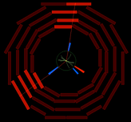
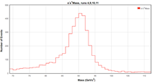

|  | Approach 1: Single Event Displays Single event displays are a great way to take a look at what happened in the collision. |
|  | Approach 2: |
Combining lots of events yields results like this mass plot using data from events with two electrons. | |
In your logbook:
- Describe the characteristics that indicate a Z particle has decayed to two electrons, two muons, and two jets in LEP events. List any characteristics common to all three types of decay.
- Identify the CMS detector subsystems (trackers, electron and hadron calorimeters and muon chambers) involved in the detection of the dielectron, dimuon and dijet Z decays.
- Describe what physicists can discover when they combine millions of events.

To Learn More:
CMS Event Display Decoded - description of event display and how to read one from Symmetry Magazine
Delphi Event Displays - Exercise to determine Z branching ratios from Hands on CERN (requires Java to run WIRED Java applet